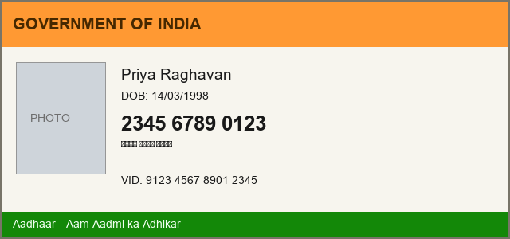

Customer Record — Verification Copy
Synthetic data. Every value below is fabricated for evaluation.
1 · Identity on file (DOM text)
NamePriya Raghavan
Aadhaar2345 6789 0123
Aadhaar (unspaced)234567890123
Aadhaar (hyphenated)2345-6789-0123
VID9123 4567 8901 2345
PANABCDE1234F
PassportK1234567
Driving licenceTN-01-20110012345
VehicleTN 01 AB 1234
2 · Payment and contact (DOM text)
Emailpriya.r@example.com
Mobile+91 98765 43210
Card4111 1111 1111 1111
A/c no12345678901234
IFSCHDFC0001234
UPIpriya@okhdfcbank
Address19 Anna Salai, Chennai 600002
3 · Same record, Indic numerals (DOM text, non-ASCII digits)
आधार (Devanagari)२३४५ ६७८९ ०१२३
मोबाइल९८७६५४३२१०
ஆதார் (Tamil)௨௩௪௫ ௬௭௮௯ ௦௧௨௩
আধার (Bengali)২৩৪৫ ৬৭৮৯ ০১২৩
A detector written in [0-9] reports this section as clean.
4 · Photograph on file (face detection)
5 · Scanned identity document (pixels only — OCR is the only route)

The number appears twice on this card, in Latin and in Devanagari. English-only OCR recovers the first and not the second.
6 · Embedded third-party panel (iframe — a separate document)
7 · Below the fold (only on screen after a scroll)
Secondary Aadhaar8765 4321 0987
Secondary emailpriya.alt@example.com
Secondary PANZYXWV9876E
Actions (no PII — masking any of these is a precision failure)
Back to topReference number 100000000001 — twelve digits, and not an Aadhaar.